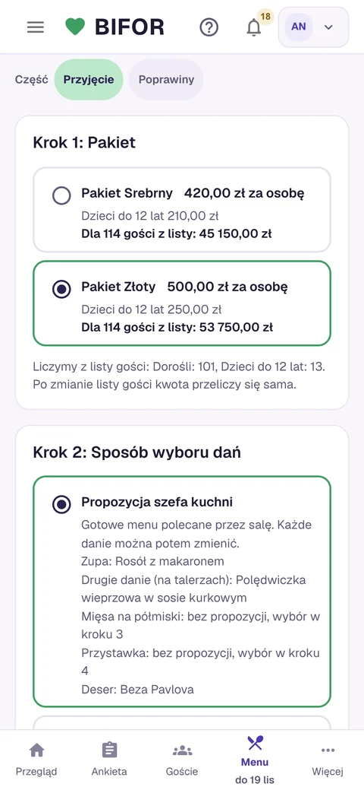
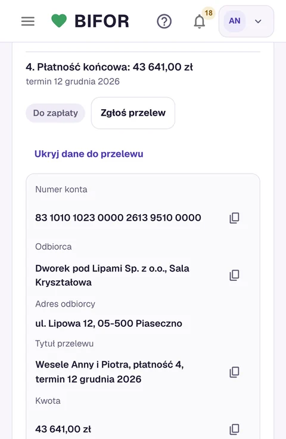
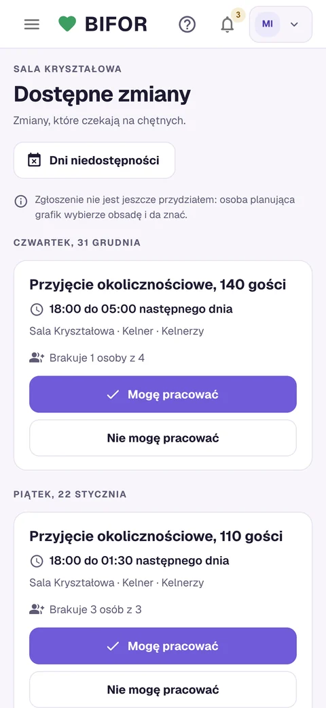
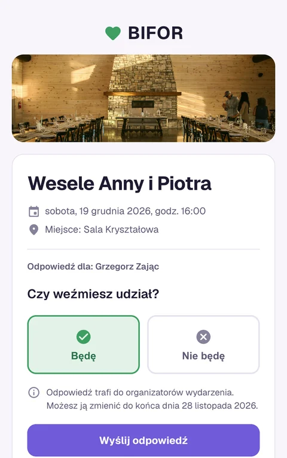
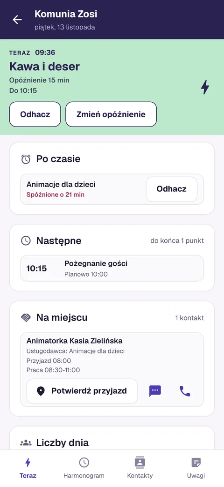
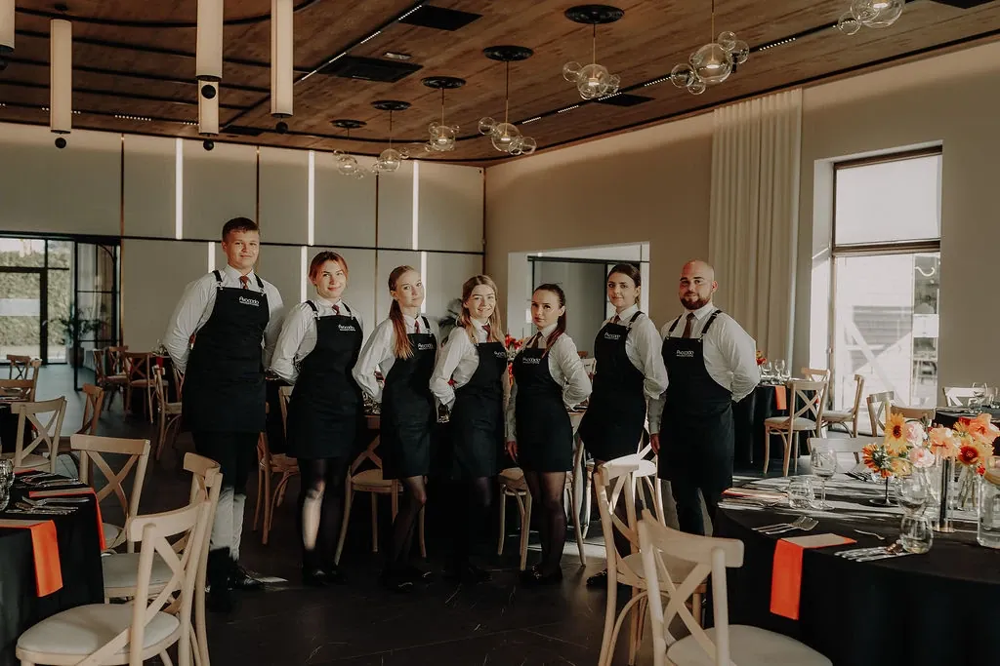
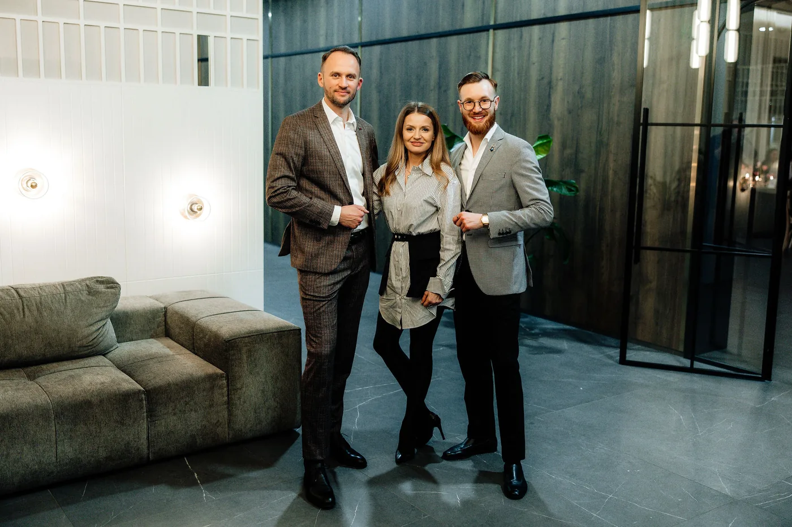
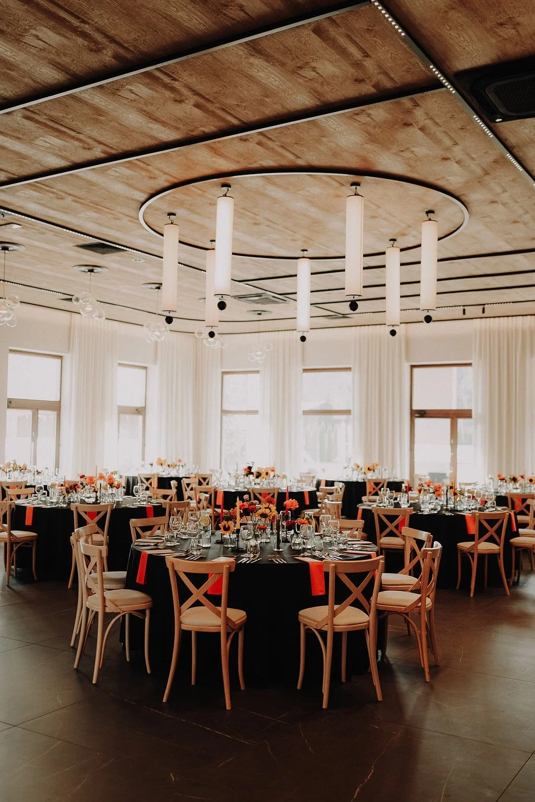

Menu i wycena
Zamawiający wybiera pakiet i dania w telefonie. Kwota liczy się sama z listy gości.
- pakiety z ceną za osobę, osobno dla dzieci
- propozycja szefa kuchni albo własny wybór dań
- po zmianie listy gości kwota przelicza się sama
System do zarządzania przyjęciami dla sal weselnych, restauracji, hoteli i obiektów eventowych.
Sala, Zamawiający i goście pracują na jednej aktualnej wersji ustaleń: od rezerwacji terminu do dnia przyjęcia.
Termin trzymasz wstępną rezerwacją. Potem zamieniasz ją w wydarzenie.
Dostaje własny dostęp: na komputerze i w telefonie.
Ankieta, goście, menu i harmonogram dnia w jednym miejscu.
Od razu widać, czego brakuje i co czeka na decyzję.
Z ustaleń powstają Karty Realizacji i tryb dnia dla zespołu.
E-maile, wiadomości, Excel, dokumenty i notatki często zawierają różne wersje informacji dotyczących tego samego wydarzenia. BIFOR zbiera je w jednym miejscu.
Jedno wydarzenie. Jedna aktualna wersja ustaleń.
Każda część korzysta z tego, co już wpisane w pozostałych. Lista gości zasila wycenę, rozsadzenie i Karty Realizacji.
Cały miesiąc sali na jednym ekranie. Termin trzymasz wstępną rezerwacją, a program ostrzega o kolizjach.
Pytania o dekoracje, tort czy muzykę w sekcjach z terminami. Zamawiający odpowiada sam, Ty zatwierdzasz.
Goście odpowiadają przez link, bez zakładania konta. Sadzacie ich na planie Twojej sali.
Pakiety z ceną za osobę i cennik atrakcji. Wycena liczy się z menu i listy gości.
Harmonogram płatności z zaakceptowanej wyceny. Zamawiający zgłasza przelew, Ty potwierdzasz wpłatę.
Umowy i pliki przy przyjęciu. Karty Realizacji dla managera, personelu i usługodawców.
Widzisz, którym przyjęciom brakuje ludzi. Pracownicy zgłaszają dostępność, a manager zatwierdza obsadę.
Zamawiający ma swoje wydarzenie na komputerze i w telefonie, bez instalowania czegokolwiek.
A także: przypomnienia e-mailem i SMS-em, historia zmian, import wydarzeń z Excela i kalendarza, menu z pliku Word oraz druki: plan rozsadzenia, winietki i tablica przy wejściu.
Tak to wygląda w programie

Zamawiający wybiera pakiet i dania w telefonie. Kwota liczy się sama z listy gości.
Wycena, raty i wpłaty w jednym miejscu. Zamawiający zgłasza przelew, Ty potwierdzasz wpłatę.

Kalendarz pokazuje, którym przyjęciom brakuje ludzi. Pracownicy zgłaszają dostępność, a manager decyduje o przydziale i zatwierdza obsadę.

Chcesz zobaczyć resztę? Pokażemy program na przykładowym wydarzeniu.
Umów prezentacjęBIFOR wykorzystuje te same dane wszędzie tam, gdzie są potrzebne. Gdy zmienia się liczba gości, program przelicza to, co może, i pokazuje, co czeka na Twoją decyzję.
Mniej przepisywania. Mniej błędów.
Jedna aktualna wersja danych.
Zmień liczbę gości i zobacz, co się dzieje.
Każdy widzi to, czego potrzebuje. Wszyscy pracują na tych samych danych.
Program podpowiada, co wymaga uwagi: zgłoszony przelew, goście bez miejsca, brak w obsadzie. Każda zmiana zostaje w historii.
Ma swoje wydarzenie w telefonie i na komputerze. Może zaprosić współorganizatora, na przykład świadkową albo wedding plannera.

Gość otwiera link z e-maila albo SMS-a i odpowiada. Bez konta i bez instalowania czegokolwiek.

W dniu przyjęcia zespół widzi, co trwa teraz i co będzie dalej. Zakres dostępu zależy od roli w zespole.
DJ, fotograf czy dekorator widzi swoje pytania i swoje punkty dnia. Listy gości i pieniędzy nie widzi.
Z ustaleń powstają dane, których zespół sali potrzebuje w dniu przyjęcia. Nie trzeba ręcznie przepisywać ustaleń do dokumentów dla zespołu.



BIFOR powstał na podstawie wieloletniego doświadczenia w organizacji wesel i przyjęć. Funkcje systemu wynikają z rzeczywistej pracy: rozmów z klientami, przygotowania wydarzenia i jego realizacji.

Od 12 lat działa w gastronomii, organizując przyjęcia i rozwijając usługi cateringowe. Jednocześnie prowadzi firmę technologiczną, dlatego dobrze zna zarówno codzienność lokali, jak i możliwości nowoczesnych rozwiązań. BIFOR to dla niego sposób na połączenie tych dwóch światów i stworzenie programu, z którego sam korzysta prowadząc restaurację.
Od 12 lat wspólnie z Markiem prowadzi biznes gastronomiczny. Przez ten czas poznała organizację przyjęć i cateringu od podszewki – od rozmów z klientami po przygotowania i realizację wydarzeń. Wie, ile drobnych spraw trzeba dopilnować, żeby wszystko się udało. To właśnie takie codzienne doświadczenia pomagają jej współtworzyć BIFOR z myślą o ludziach pracujących w gastronomii.
Z gastronomią związany od czasów szkoły, a branża eventowa od zawsze jest jego pasją. Od 13 lat pracuje przy organizacji wesel i przyjęć, a od wielu lat jako manager zajmuje się wszystkim – od pierwszych rozmów z klientami po dopilnowanie ostatnich szczegółów w dniu wydarzenia. Ostatnie lata spędził jako manager Restauracji Avocado, gdzie na co dzień mierzył się z wyzwaniami, które BIFOR ma pomagać rozwiązywać.
Dziękujemy Avocado, że byliście z nami w naszym dniu i dzięki Wam mogliśmy w spokoju bawić się, a nie stresować, że coś jest nie tak.
Profesjonalizm, luz i żadnych problemów - nie można wyobrazić sobie lepszej współpracy.
(...) jego wiedza i zaangażowanie przeszła nasze najśmielsze oczekiwania. Odpowiadał na nasze pytania i rozwiewał wszystkie wątpliwości.
Opinie gości Restauracji Avocado w Sieradzu, prowadzonej przez twórców BIFOR. Pełne opinie są na stronie restauracji.
O programie opowie Ci ktoś, kto zna tę pracę od środka.
Umów prezentację
Wesela · osiemnastki · urodziny · komunie · chrzciny · imprezy firmowe
Pracujesz jako wedding planner? Do wydarzenia dołączysz jako współorganizator, na przykład razem z parą młodą.
Nie ma tu Twojego pytania? Napisz do nas w formularzu — odpowiemy.
Przejdź do formularza →BIFOR to system do zarządzania przyjęciami dla sal weselnych, restauracji, hoteli i obiektów eventowych. Porządkuje wszystkie ustalenia wydarzenia w jednym miejscu.
Nie. Korzystają z niego sale, restauracje, hotele i obiekty, które przyjmują wesela, osiemnastki, urodziny, komunie, chrzciny i imprezy firmowe.
Nie. BIFOR działa w przeglądarce, na komputerze i na telefonie.
Tak. Zapraszasz go e-mailem do konkretnego wydarzenia. Ma je na komputerze i w telefonie. Może też zaprosić współorganizatora, na przykład wedding plannera.
Nie. Odpowiadają przez link z e-maila albo SMS-a.
Tak. DJ, fotograf czy dekorator widzi swoje pytania, swoje punkty dnia i swoją Kartę Realizacji. Listy gości i pieniędzy nie widzi.
Nie. Pieniądze trafiają bezpośrednio na konto sali, a BIFOR nie pośredniczy w płatnościach.
Przeniesiesz je importem. Przed zapisem widzisz każdy wiersz. Menu wczytasz z pliku Word.
Cenę ustalamy po krótkiej rozmowie o Twoim obiekcie.
Umów prezentację. Pokażemy program na przykładowym wydarzeniu i omówimy uruchomienie w Twoim obiekcie.
Zostaw kontakt. Odezwiemy się, pokażemy program na przykładowym wydarzeniu i omówimy uruchomienie w Twoim obiekcie.
Wolisz porozmawiać? Zadzwoń: 510 400 388 albo napisz: kontakt@bifor.pl